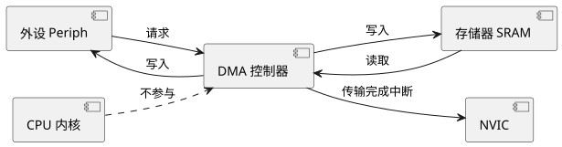
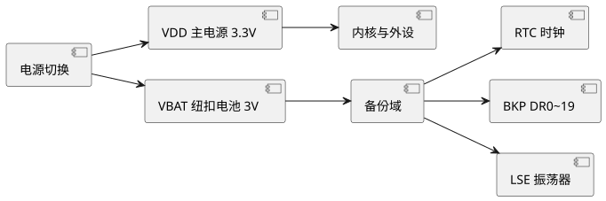

第 21 章 DMA 与 RTC
学习目标
- 理解 DMA 的工作原理与数据流模型，掌握 DMA Stream/Channel 的映射关系
- 能够使用 CubeMX 配置 DMA 实现内存到内存、外设到内存、内存到外设传输
- 掌握 ADC DMA、USART DMA、SPI DMA 三种典型实战编程方法
- 理解 RTC 实时时钟、闹钟、时间戳的功能及寄存器结构
- 学会使用备份寄存器、VBAT 电池域与 HAL_RTC 库函数维护日历信息
21.1 DMA 工作原理与数据流
DMA（Direct Memory Access，直接存储器访问）是单片机内部一种无需 CPU 干预即可在外设与存储器之间搬运数据的硬件机制。其本质是一个独立的"搬运工控制器"，可与 CPU 并行工作，从而将 CPU 从字节级数据搬运中解放出来。
STM32F407 内置 2 个 DMA 控制器（DMA1 / DMA2），每个控制器有 8 个 DMA 数据流（Stream 0~7），每个数据流可从 8 个 通道（Channel 0~7）中选择一个外设请求源，总共最多 16 个数据流。

查看 PlantUML 源码
@startuml
skinparam defaultFontName "Microsoft YaHei"
skinparam backgroundColor #ffffff
left to right direction
component "外设 Periph" as A
component "DMA 控制器" as B
component "存储器 SRAM" as C
component "CPU 内核" as D
component "NVIC" as E
A --> B : 请求
C --> B : 读取
B --> A : 写入
B --> C : 写入
D ..> B : 不参与
B --> E : 传输完成中断
@enduml21.1.1 DMA 三种传输方向
| 方向 | 源 | 目的 | 典型应用 |
|---|---|---|---|
| 外设→内存 | ADC_DR / USART_DR | SRAM 缓冲区 | ADC 多通道采集、串口接收大数据 |
| 内存→外设 | SRAM 数组 | USART_DR / SPI_DR | 串口发送、SPI 发送 Flash 数据 |
| 内存→内存 | Flash / SRAM | SRAM | 大块数据复制、查表初始化 |
21.1.2 DMA Stream/Channel 映射
每个外设请求绑定到固定的"数据流+通道"组合，例如 ADC1 DMA 请求为 DMA2 Stream0 Channel0，USART1_RX 为 DMA2 Stream2 Channel4。具体映射必须查阅 STM32F407 参考手册 Table 43/44。CubeMX 选中对应外设的 DMA 请求后会自动配置好映射。
21.1.3 传输模式
- Normal：传输 N 个数据后停止，需要重新启动。
- Circular：传输完 N 个数据后自动从头循环，适合 ADC 连续采集、音频流。
- Peripheral Flow Control：外设控制结束，如 SDIO 多块传输。
21.2 DMA 配置
21.2.1 内存到内存配置
内存到内存传输不需要外设请求信号，DMA 启动后立即搬运。STM32F407 仅 DMA2 支持此模式，且只能用 Stream0~7 中的一条，需启用 FIFO 以避免总线冲突。
/* main.c - DMA 内存到内存复制示例 */
#define BUF_SIZE 256
static uint32_t src_buf[BUF_SIZE];
static uint32_t dst_buf[BUF_SIZE];
extern DMA_HandleTypeDef hdma_mem2mem;
int main(void)
{
HAL_Init();
SystemClock_Config();
MX_DMA_Init();
/* 初始化源数据 */
for (int i = 0; i < BUF_SIZE; i++)
src_buf[i] = i * 2;
/* 启动 DMA 复制 */
HAL_DMA_Start(&hdma_mem2mem,
(uint32_t)src_buf,
(uint32_t)dst_buf,
BUF_SIZE);
/* 等待传输完成 */
HAL_DMA_PollForTransfer(&hdma_mem2mem,
HAL_DMA_FULL_TRANSFER,
100);
/* 校验 */
int ok = 1;
for (int i = 0; i < BUF_SIZE; i++)
if (dst_buf[i] != src_buf[i]) { ok = 0; break; }
printf("DMA mem2mem %s\r\n", ok ? "OK" : "FAIL");
}21.2.2 外设到内存配置（ADC）
ADC 多通道扫描必须配合 DMA Circular 模式，自动将转换结果搬运到 SRAM 缓冲区，循环更新。详见第 19 章 19.5 节。
21.3 DMA 实战
21.3.1 ADC DMA 多通道采集
配置 ADC1 三个规则组通道（PA0/PA1/PA2），DMA 为 Circular 模式，缓冲区 3 个半字。启动后缓冲区自动刷新，主循环直接读取即可。
extern ADC_HandleTypeDef hadc1;
static uint16_t adc_buf[3];
HAL_ADCEx_Calibration_Start(&hadc1, ADC_SINGLE_ENDED);
HAL_ADC_Start_DMA(&hadc1, (uint32_t*)adc_buf, 3);
/* DMA 自动循环更新 adc_buf[] */
while (1) {
printf("V0=%.2f V1=%.2f V2=%.2f\r\n",
adc_buf[0]*3.3/4095.0,
adc_buf[1]*3.3/4095.0,
adc_buf[2]*3.3/4095.0);
HAL_Delay(200);
}21.3.2 USART DMA 发送/接收
USART 配合 DMA 可实现大数据帧的高效收发，CPU 仅在帧结束时处理一次。以下示例使用 USART1 TX DMA 发送 100 字节缓冲区。
extern UART_HandleTypeDef huart1;
extern DMA_HandleTypeDef hdma_usart1_tx;
extern DMA_HandleTypeDef hdma_usart1_rx;
uint8_t tx_buf[100];
uint8_t rx_buf[100];
/* 发送 */
snprintf((char*)tx_buf, sizeof(tx_buf),
"DMA test: counter=%d\r\n", HAL_GetTick());
HAL_UART_Transmit_DMA(&huart1, tx_buf, strlen((char*)tx_buf));
/* 接收 - 启动空闲中断 + DMA 接收 */
HAL_UARTEx_ReceiveToIdle_DMA(&huart1, rx_buf, sizeof(rx_buf));
/* 回调 - 在 UART 空闲时触发 */
void HAL_UARTEx_RxEventCallback(UART_HandleTypeDef *huart, uint16_t Size)
{
if (huart->Instance == USART1) {
/* 处理 rx_buf 前 Size 字节 */
HAL_UART_Transmit_DMA(huart, rx_buf, Size); /* 回显 */
/* 重新启动接收 */
HAL_UARTEx_ReceiveToIdle_DMA(huart, rx_buf, sizeof(rx_buf));
}
}21.3.3 SPI DMA 读写 Flash
extern SPI_HandleTypeDef hspi1;
extern DMA_HandleTypeDef hdma_spi1_tx;
extern DMA_HandleTypeDef hdma_spi1_rx;
uint8_t cmd[4] = {0x03, 0x00, 0x00, 0x00}; /* READ, addr=0 */
uint8_t buf[256];
W25_CS_LOW();
HAL_SPI_Transmit_DMA(&hspi1, cmd, 4);
/* 等待发送完成（HAL_SPI_TxCpltCallback） */
HAL_SPI_Receive_DMA(&hspi1, buf, 256);
W25_CS_HIGH();21.4 RTC 实时时钟
RTC（Real-Time Clock，实时时钟）是单片机内部一个独立运行的低频时钟模块，可记录年月日时分秒，并支持闹钟、时间戳功能。其核心特点：
- 使用 LSE（32.768kHz 外部晶振）或 LSI（约 32kHz 内部 RC）作为时钟源，主电源掉电后由 VBAT 电池供电继续计时。
- 包含一个 32 位二进制计数器（TR）和日期寄存器（DR），BCD 编码。
- 支持 2 个闹钟（Alarm A / Alarm B）与时间戳（Timestamp）功能。
- 具有唤醒引脚（WKUP）和入侵检测（Tamper）功能。
21.4.1 RTC 寄存器结构
| 寄存器 | 含义 | 位数 |
|---|---|---|
| TR (Time Register) | 时/分/秒（BCD） | 32 位 |
| DR (Date Register) | 年/月/日/星期（BCD） | 32 位 |
| ALRMAR/ALRMBR | 闹钟 A/B 配置 | 32 位 |
| TSSR | 时间戳时间/日期 | 32 位 |
| PRER | 异步/同步分频 | 32 位 |
| ISR | 初始化与状态标志 | 32 位 |
21.4.2 LSE 时钟与分频
LSE 频率 32768Hz，需经过异步分频（异步预分频系数 $P_{ASYNC}$=127）和同步分频（同步预分频系数 $P_{SYNC}$=255）后得到 1Hz 信号驱动秒计数器：
$$f_{1Hz} = \frac{f_{LSE}}{(P_{ASYNC}+1)(P_{SYNC}+1)} = \frac{32768}{128 \times 256} = 1\text{Hz}$$
21.5 备份寄存器与 VBAT
STM32F407 内部包含 20 个 32 位备份寄存器（Backup Registers，BKP DR0~DR19），位于备份域（Backup Domain）中。备份域由 VBAT 引脚单独供电，主电源 VDD 掉电时只要 VBAT 有电池（如 CR1220），备份寄存器与 RTC 时间将保持不丢失。

查看 PlantUML 源码
@startuml
skinparam defaultFontName "Microsoft YaHei"
skinparam backgroundColor #ffffff
left to right direction
component "VDD 主电源 3.3V" as A
component "内核与外设" as B
component "VBAT 纽扣电池 3V" as C
component "备份域" as D
component "RTC 时钟" as E
component "BKP DR0~19" as F
component "LSE 振荡器" as G
component "电源切换" as H
A --> B
C --> D
D --> E
D --> F
D --> G
H --> A
H --> C
@enduml使用备份寄存器前必须使能 PWR 时钟并允许写访问：
__HAL_RCC_PWR_CLK_ENABLE();
HAL_PWR_EnableBkUpAccess(); /* 允许访问备份域 */
/* 写入备份寄存器 */
HAL_RTCEx_BKUPWrite(&hrtc, RTC_BKP_DR0, 0xA5A5);
/* 读取 */
uint32_t flag = HAL_RTCEx_BKUPRead(&hrtc, RTC_BKP_DR0);
if (flag != 0xA5A5) {
/* 首次上电：初始化 RTC */
}21.6 CubeMX 配置 RTC 与 HAL_RTC 库函数
21.6.1 CubeMX 配置步骤
- RCC 中将 LSE 设为 Crystal/Ceramic Resonator。
- 启用 RTC，Async Prediv = 127，Sync Prediv = 255。
- 设置初始日期时间（也可在代码中通过
HAL_RTC_SetTime修改）。 - 按需启用 Alarm A/B 中断。
- 生成代码后 CubeMX 会创建
hrtc句柄与MX_RTC_Init()。
21.6.2 设置时间
RTC_TimeTypeDef sTime = {0};
RTC_DateTypeDef sDate = {0};
sTime.Hours = 0x14; /* BCD：14 点 */
sTime.Minutes = 0x30; /* 30 分 */
sTime.Seconds = 0x00;
sTime.DayLightSaving = RTC_DAYLIGHTSAVING_NONE;
sTime.StoreOperation = RTC_STOREOPERATION_RESET;
sDate.WeekDay = RTC_WEEKDAY_MONDAY;
sDate.Month = RTC_MONTH_AUGUST;
sDate.Date = 0x10;
sDate.Year = 0x26; /* 2026 */
HAL_RTC_SetTime(&hrtc, &sTime, RTC_FORMAT_BCD);
HAL_RTC_SetDate(&hrtc, &sDate, RTC_FORMAT_BCD);21.6.3 读取时间
RTC_TimeTypeDef sTime;
RTC_DateTypeDef sDate;
/* 必须先读 Date 再读 Time，否则 Time 会被冻结 */
HAL_RTC_GetDate(&hrtc, &sDate, RTC_FORMAT_BCD);
HAL_RTC_GetTime(&hrtc, &sTime, RTC_FORMAT_BCD);
printf("20%02X-%02X-%02X %02X:%02X:%02X\r\n",
sDate.Year, sDate.Month, sDate.Date,
sTime.Hours, sTime.Minutes, sTime.Seconds);HAL_RTC_GetTime 会冻结时间影子寄存器，必须用 HAL_RTC_GetDate 释放冻结。
21.6.4 闹钟中断
RTC_AlarmTypeDef sAlarm = {0};
sAlarm.AlarmTime.Hours = 0x15;
sAlarm.AlarmTime.Minutes = 0x00;
sAlarm.AlarmMask = RTC_ALARMMASK_DATEWEEKDAY; /* 每天触发 */
sAlarm.AlarmSubSecondMask = RTC_ALARMSUBSECONDMASK_ALL;
sAlarm.Alarm = RTC_ALARM_A;
HAL_RTC_SetAlarm_IT(&hrtc, &sAlarm, RTC_FORMAT_BCD);
/* 在 stm32f4xx_it.c 中处理 RTC_Alarm_IRQHandler */
void HAL_RTC_AlarmAEventCallback(RTC_HandleTypeDef *hrtc)
{
HAL_GPIO_TogglePin(GPIOE, GPIO_PIN_0); /* 闹钟到 LED 翻转 */
}本章小结
- DMA 是无需 CPU 干预的数据搬运机制，STM32F407 有 DMA1/DMA2 各 8 个 Stream、每 Stream 8 个 Channel。
- 三种传输方向：外设↔内存、内存↔内存；模式有 Normal / Circular 两种。
- ADC 多通道扫描必须配合 DMA Circular；USART DMA 配合空闲中断可实现不定长帧接收；SPI DMA 可加速 Flash 大块读写。
- RTC 由 LSE/LSI 驱动，1Hz 计数来自异步预分频 127 + 同步预分频 255 的级联分频。
- 备份寄存器位于 VBAT 备份域，主电源掉电时仍保持，常用作"首次上电"标志位。
- HAL_RTC_GetDate 必须先于 HAL_RTC_GetTime 调用，否则时间影子寄存器不会刷新。
思考题与习题
- 简述 DMA 与 CPU 并行工作的原理，并说明 DMA 在何种场景下能显著降低 CPU 占用。
- 编写程序：使用 DMA2 Stream0 实现 256 个 32 位整数从 SRAM 数组 src 复制到 dst，并校验结果。
- STM32 的 RTC 时钟选择 LSE 时，异步分频与同步分频分别应设置为多少？请给出计算过程。
- 使用 HAL_RTC 库函数设置 RTC 时间为 2026 年 8 月 10 日 14:30:00，并每秒通过串口输出当前时间。
- 使用备份寄存器 BKP_DR0 存储"首次上电"标志，实现"VBAT 断电后重新初始化 RTC 时间"的逻辑。
- 使用 USART1 + DMA 实现不定长帧接收，帧结束标志为换行符 '\n'，并回显接收到的数据。
参考文献
- ST 官方. STM32F405/415/407/417 参考手册 RM0090 [Z]. 2024. https://www.st.com/
- ST 官方. STM32F4xx HAL 库用户手册 UM1725 [Z]. 2024.
- ST 官方. AN4070 Application Note: Using the hardware floating point unit [Z]. 2024.
- 正点原子. STM32F4 开发指南——HAL 库版本 [M]. 北京：北京航空航天大学出版社, 2020.
- 张毅刚. 单片机原理及应用——C51 编程 + Proteus 仿真（第 4 版）[M]. 北京：高等教育出版社, 2021.